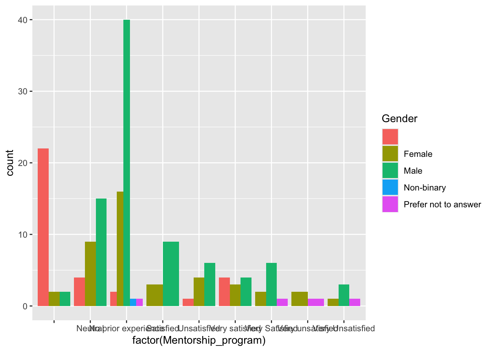

Question 1-3
We are using a data set collected from an annual survey provided to the Vermont Beekeepers Association to better understand the social demographic of the organization and member satisfaction with aspects of the organization. We aim to better support minority demographics by understanding the satisfaction rating among these groups.
ds <- read.csv("Annual Survey Results - Final.csv")
head(ds)## Annual_meetings Mentorship_program Access_resources
## 1 Satisfied No prior experience Neutral
## 2 Satisfied No prior experience Very satisfied
## 3 Very satisfied Satisfied
## 4 Very satisfied No prior experience No prior experience
## 5 No prior experience No prior experience Very satisfied
## 6 No prior experience No prior experience No prior experience
## Educational_workshops Industry_policy_insights Networking_opportunities
## 1 Neutral Satisfied Satisfied
## 2 Very satisfied Satisfied Satisfied
## 3 Satisfied Satisfied Very satisfied
## 4 No prior experience No prior experience Very satisfied
## 5 Very satisfied Very satisfied No prior experience
## 6 No prior experience No prior experience No prior experience
## News_updates Marketing_social Age Gender Race Location
## 1 Satisfied Satisfied 55-64 Male White Southern Vermont
## 2 Satisfied Satisfied 35-54 Male White Northwest Vermont
## 3 Satisfied Satisfied 65+ Male White Western Vermont
## 4 Very satisfied Very satisfied 55-64 Male White Other
## 5 Very satisfied No prior experience 65+ Female White Central Vermont
## 6 No prior experience No prior experience
## Scale Beekeeping_experience
## 1 Hobbyist Beekeeper (<25 colonies) 10+
## 2 Hobbyist Beekeeper (<25 colonies) 4-6
## 3 Hobbyist Beekeeper (<25 colonies) 4-6
## 4 Sideliner Beekeeper (25-300 colonies) 4-6
## 5 Hobbyist Beekeeper (<25 colonies) 0-3
## 6Question 4 & 5: Analyzing the data multiple times/ Graphing the data
Instead of changing parameters, we analyzed several questions using different aspects of the data set.
library(ggplot2)
ggplot(data = ds, aes(x = factor(Mentorship_program), fill = Gender)) +
geom_bar(position = "dodge")
We used chi-squared tests to calculate the significance of our categorical data.
# Create a new column that indicates whether a person is unsatisfied or not
ds$Mentorship_programClean <- ifelse(ds$Mentorship_program %in% c("Unsatisfied", "Very Unsatisfied", "Neutral"), "Unsatisfied", "Satisfied")
# Create a contingency table for gender vs unsatisfaction status
contingency_table <- table(ds$Gender, ds$Mentorship_programClean)
# Perform the Chi-squared test
chi_squared_test <- chisq.test(contingency_table)## Warning in chisq.test(contingency_table): Chi-squared approximation may be
## incorrect# Print the results of the test
print(chi_squared_test)##
## Pearson's Chi-squared test
##
## data: contingency_table
## X-squared = 3.6684, df = 4, p-value = 0.4527# Get the standardized residuals
standardized_residuals <- chi_squared_test$stdres
#Priint residuals
print(standardized_residuals)##
## Satisfied Unsatisfied
## 1.67242463 -1.67242463
## Female -1.13158641 1.13158641
## Male -0.46966822 0.46966822
## Non-binary 0.60485838 -0.60485838
## Prefer not to answer 0.07630846 -0.07630846print(contingency_table)##
## Satisfied Unsatisfied
## 28 5
## Female 28 14
## Male 61 24
## Non-binary 1 0
## Prefer not to answer 3 1# Create a new column that indicates whether a person is unsatisfied or not
ds$Networking_opportunitiesClean <- ifelse(ds$Networking_opportunities %in% c("Unsatisfied", "Very Unsatisfied", "Neutral"), "Unsatisfied", "Satisfied")
# Create a contingency table for gender vs unsatisfaction status
contingency_table2 <- table(ds$Beekeeping_experience, ds$Networking_opportunitiesClean)
print(contingency_table2)##
## Satisfied Unsatisfied
## 28 4
## 0-3 23 7
## 10+ 38 9
## 4-6 20 14
## 7-10 17 2
## Prefer not to answer 1 2# Perform the Chi-squared test
chi_squared_test2 <- chisq.test(contingency_table2)## Warning in chisq.test(contingency_table2): Chi-squared approximation may be
## incorrect# Print the results of the test
print(chi_squared_test2)##
## Pearson's Chi-squared test
##
## data: contingency_table2
## X-squared = 13.617, df = 5, p-value = 0.01823# Get the standardized residuals
standardized_residuals2 <- chi_squared_test2$stdres
#Priint residuals
print(standardized_residuals2)##
## Satisfied Unsatisfied
## 1.57587692 -1.57587692
## 0-3 -0.04358249 0.04358249
## 10+ 0.74735144 -0.74735144
## 4-6 -2.82046675 2.82046675
## 7-10 1.37619873 -1.37619873
## Prefer not to answer -1.81169018 1.81169018Question 6-9: For loops
library(dplyr)
# list to store results
proportion_results <- list()
# Loop through each gender
for (gender in c("Male", "Female")) {
# Subset the data for this gender group
gender_data <- ds[ds$Gender == gender, ]
# list to store proportions for this gender
gender_proportions <- list()
# Loop through each column
for (column in c("Annual_meetings", "Mentorship_program", "Access_resources", "Educational_workshops", "Industry_policy_insights", "Networking_opportunities", "News_updates", "Marketing_social")) {
# Calculate the proportion of each category for this column
prop_very_satisfied <- mean(gender_data[[column]] == "Very satisfied") * 100
prop_satisfied <- mean(gender_data[[column]] == "Satisfied") * 100
prop_unsatisfied <- mean(gender_data[[column]] == "Unsatisfied") * 100
prop_very_unsatisfied <- mean(gender_data[[column]] == "Very unsatisfied") * 100
prop_neutral <- mean(gender_data[[column]] == "Neutral") * 100
prop_noexperience <- mean(gender_data[[column]] == "No prior experience") * 100
# Store the results in the list
gender_proportions[[column]] <- c("Very satisfied" = prop_very_satisfied,
"Satisfied" = prop_satisfied,
"Unsatisfied" = prop_unsatisfied,
"Very unsatisfied" = prop_very_unsatisfied,
"Neutral" = prop_neutral,
"No prior expreience" = prop_noexperience)
}
# Store the results for this gender
proportion_results[[gender]] <- gender_proportions
}
# Print the results
print(proportion_results)## $Male
## $Male$Annual_meetings
## Very satisfied Satisfied Unsatisfied Very unsatisfied
## 9.411765 28.235294 1.176471 0.000000
## Neutral No prior expreience
## 18.823529 25.882353
##
## $Male$Mentorship_program
## Very satisfied Satisfied Unsatisfied Very unsatisfied
## 4.705882 10.588235 7.058824 0.000000
## Neutral No prior expreience
## 17.647059 47.058824
##
## $Male$Access_resources
## Very satisfied Satisfied Unsatisfied Very unsatisfied
## 10.588235 34.117647 1.176471 1.176471
## Neutral No prior expreience
## 14.117647 18.823529
##
## $Male$Educational_workshops
## Very satisfied Satisfied Unsatisfied Very unsatisfied
## 16.470588 25.882353 1.176471 1.176471
## Neutral No prior expreience
## 9.411765 11.764706
##
## $Male$Industry_policy_insights
## Very satisfied Satisfied Unsatisfied Very unsatisfied
## 14.117647 22.352941 0.000000 1.176471
## Neutral No prior expreience
## 18.823529 17.647059
##
## $Male$Networking_opportunities
## Very satisfied Satisfied Unsatisfied Very unsatisfied
## 11.764706 35.294118 1.176471 0.000000
## Neutral No prior expreience
## 16.470588 16.470588
##
## $Male$News_updates
## Very satisfied Satisfied Unsatisfied Very unsatisfied
## 9.411765 40.000000 1.176471 0.000000
## Neutral No prior expreience
## 9.411765 9.411765
##
## $Male$Marketing_social
## Very satisfied Satisfied Unsatisfied Very unsatisfied
## 8.235294 28.235294 0.000000 0.000000
## Neutral No prior expreience
## 25.882353 21.176471
##
##
## $Female
## $Female$Annual_meetings
## Very satisfied Satisfied Unsatisfied Very unsatisfied
## 7.142857 40.476190 0.000000 0.000000
## Neutral No prior expreience
## 14.285714 26.190476
##
## $Female$Mentorship_program
## Very satisfied Satisfied Unsatisfied Very unsatisfied
## 7.142857 7.142857 9.523810 4.761905
## Neutral No prior expreience
## 21.428571 38.095238
##
## $Female$Access_resources
## Very satisfied Satisfied Unsatisfied Very unsatisfied
## 16.666667 28.571429 0.000000 2.380952
## Neutral No prior expreience
## 11.904762 9.523810
##
## $Female$Educational_workshops
## Very satisfied Satisfied Unsatisfied Very unsatisfied
## 21.428571 30.952381 7.142857 2.380952
## Neutral No prior expreience
## 4.761905 4.761905
##
## $Female$Industry_policy_insights
## Very satisfied Satisfied Unsatisfied Very unsatisfied
## 16.666667 9.523810 0.000000 2.380952
## Neutral No prior expreience
## 19.047619 19.047619
##
## $Female$Networking_opportunities
## Very satisfied Satisfied Unsatisfied Very unsatisfied
## 16.666667 11.904762 9.523810 2.380952
## Neutral No prior expreience
## 19.047619 14.285714
##
## $Female$News_updates
## Very satisfied Satisfied Unsatisfied Very unsatisfied
## 26.190476 16.666667 4.761905 2.380952
## Neutral No prior expreience
## 11.904762 7.142857
##
## $Female$Marketing_social
## Very satisfied Satisfied Unsatisfied Very unsatisfied
## 11.904762 16.666667 0.000000 2.380952
## Neutral No prior expreience
## 23.809524 23.809524